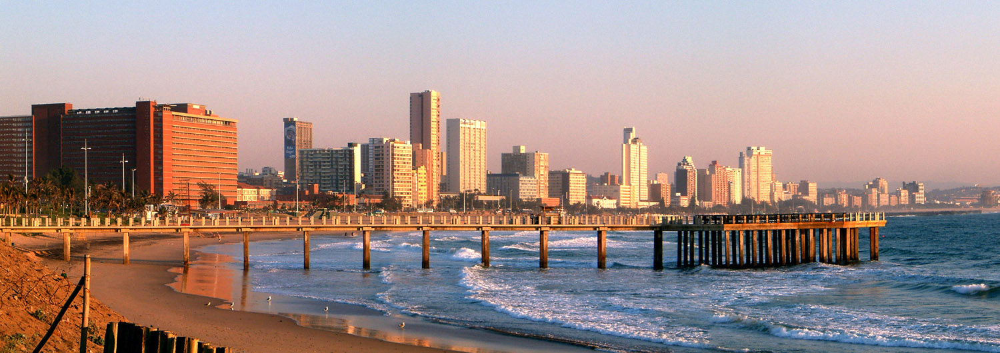
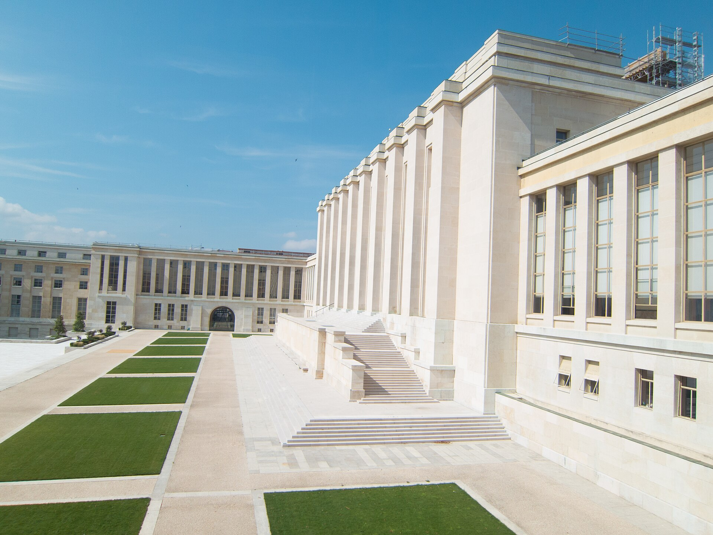
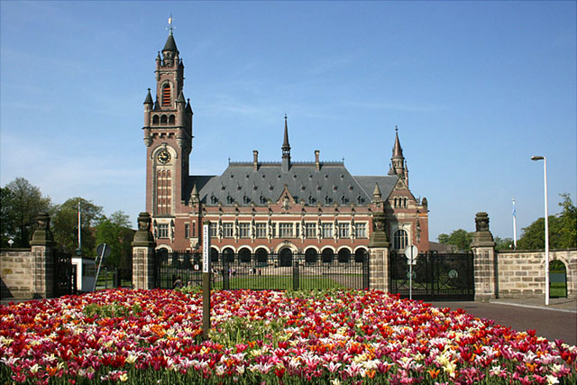

平民遭到大規模傷害
1994 年盧安達發生種族滅絕。在 Akayesu 案中，法庭審查殺害平民與性暴力等行為，以及被告應負的責任。
她參與審判戰爭暴行，
讓加害者的責任接受法律檢驗。
Navanethem “Navi” Pillay
納維・皮萊 · 南非法律家
2026 年和平獎唯一得獎者。官方肯定她
「推動和平與國際法的努力」。
“for her efforts to promote peace and international law”
30 秒看懂 ↓
皮萊是一位法官和人權工作者。她參與的工作，是查清誰傷害了誰、審查證據，再依法律判斷誰應負責。要理解她的貢獻，先看一個她參與審判的真實案件。
1994 年盧安達發生種族滅絕。在 Akayesu 案中，法庭審查殺害平民與性暴力等行為，以及被告應負的責任。
皮萊是三位審判法官之一。1998 年的判決確認：若性暴力被用來摧毀特定群體，且符合相關法律要件，也可以構成種族滅絕。
這項判決說明了如何把性暴力納入種族滅絕的法律判斷。日後面對類似案件，法庭有重要判例可參考，仍須逐案審查證據。
戰事停止後，受害者的傷害仍然存在。審判可以查清犯罪、追究責任，讓受害者的遭遇得到法律上的承認。這是和平獎所關心的另一部分：除了停止暴力，也要建立處理暴力後果的制度。
不要誤解：法庭判決不會自動讓戰爭停止；我們也不能只憑這個案件，就斷言她使多少暴力不再發生。本獎肯定的是她長期推動和平與國際法的工作。
案件事實：ICTR 官方判決新聞。和平意義為本頁解說；官方得獎理由 ↗
皮萊出生於南非德班、印度泰米爾裔家庭。她成長於種族隔離制度之下，之後成為律師，面對結構性的歧視、隔離與排除。諾貝爾委員會將她早期反種族隔離的法律工作，與後來的國際司法貢獻，視為相連的道路。
法律保障的意思是：即使傷害你的人有權力，也必須接受證據調查與法律判斷。
引框為本頁原創解說，非皮萊原話。人生背景依官方公告整理。
點選地圖標記或下方地點，就能看到它與皮萊生涯、案件及國際司法的關係。地圖標示城市概略位置，不是旅行路線，也不代表照片拍攝於她任職當年。
皮萊的出生與成長背景。在南非種族隔離制度下的經驗，是理解她後來法律道路的起點。


地點關聯依諾貝爾官方公告及ICTR 官方機構介紹整理。盧安達是案件背景地；ICTR 審判所在地在坦尚尼亞阿魯沙，不要混淆。
盧安達國際刑事法庭於 1998 年作出的 Akayesu 判決，確立性暴力在具備摧毀受保護群體的特定意圖等要件時，可以構成種族滅絕。皮萊是參與該判決的三位審判法官之一。
要說準確：不是每一件性暴力都自動等於種族滅絕；判斷須符合特定法律要件。判決是法庭共同作成，不能說成她一人的發明。
1998 年法庭官方判決新聞 ↗法庭審理廣播電台與報紙在 1994 年盧安達種族滅絕中的作用。這讓世界看見：媒體訊息若符合「直接且公開煽動種族滅絕」的法律要件，不能只以言論形式迴避責任。這也是皮萊參與的國際司法工作的重要背景。
不是把所有仇恨言論都當作同一罪名。法庭必須審查言論內容、語境及法律要件。2007 年上訴判決修改部分定罪與刑度，閱讀案件要區分初審和上訴結果。
2003 年初審官方新聞 ↗ · 2007 年上訴結果 ↗
審理個人的國際刑事責任，包括符合管轄與法律要件的種族滅絕、危害人類罪、戰爭罪等。它不是處理所有世界事件的無限制法庭。
皮萊的角色：曾任 ICC 法官。
限制：沒有自己的警察，逮捕與執行需要國家合作。
ICC 官方說明 ↗盧安達國際刑事法庭（ICTR）是為特定背景設立的另一個法庭，並非 ICC。上方的 Akayesu 與媒體案由 ICTR 審理。
例如 Akayesu 案：法庭把證詞與其他證據放在一起審查，判斷被告的責任，並說明性暴力在什麼情況下可以構成種族滅絕。判決既處理這個案件，也讓以後的法官有判例可參考。
法院不能只因為有人被指控就定罪，需要足夠證據；也不是所有事件都能由同一座法院審理。即使發出逮捕令，仍可能需要國家協助逮捕。因此，有判決不等於戰爭立刻停止，也不等於所有加害者都已被抓到。
在種族隔離背景下從事法律工作，之後擔任南非高等法院法官。
參與國際刑事審判；1998 年 Akayesu 案成為重要判例。
擔任國際刑事法院法官。
從司法審判延伸到人權倡議與國際制度工作。
官方肯定她推動和平與國際法的努力。
任職資訊：諾貝爾官方與OHCHR 歷任高級專員。
是。2026 年和平獎由 Navanethem “Navi” Pillay 一人獲得。
不是。國際法由條約、習慣與不同機構共同發展；她的重要性在於司法實踐、法律標準與制度建設。重大判決也是多位法官共同審理的成果。
不一定。以 ICC 為例，法院沒有自己的警察；逮捕、移交與執行仰賴國家合作。法律責任與執行能力是兩個不同問題。
不同。調查委員會蒐集與評估事實、提出報告和建議；刑事法院依法審判個人責任。調查報告本身不是刑事定罪。
實拍圖片之來源、作者與授權見圖說及圖片來源紀錄。分享圖使用同一公有領域肖像搭配本頁原創排版。沒有 AI 生成照片。背景光弧為裝飾動畫，非真實事件影像。